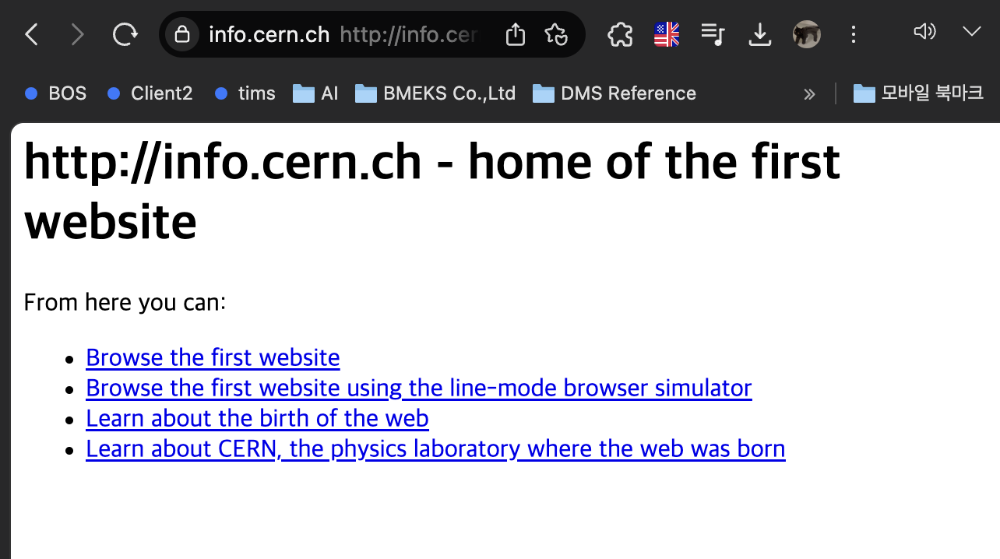

중앙이 없이 그물망 처럼 생겼다. 수많은 점들이 통신의 역할을 할 수 있는 시스템 망. 인터넷은 1960년에 출발함. 그러나 거대 기관에서 사용하던 통신 시스템이었기에 사람들은 잘 몰랐음.
1990년, 스위스에서 웹이 태어나게 됨. 정보기술 역사상 가장 중요한 사건으로 기억된 웹. 왜 스위스에서 태어났을까? 제네바에 유럽입자물리연구소가 있음. 여기서 강입자 가속기 라는 장치가 있음. 가장 거대, 비싸, 복잡한 장치임. 이 장치는 아주 작은 입자를 보는 장치. 인류의 현미경이랄까? 이 강입자 가속기는 둘레가 27키로고 이렇게 생겼음
 입자를 고속 회전 시켜, 충돌에 의해 어마어마한 에너지가 생기고 어떠한 작은 입자를 발견할 수 있을 것이다는 가설에서 시작되었다. 힉스보선이라고 함. 피터 힉스는 존재를 증명하고 노벨 물리학상을 받게 됨. 인류란 그런것...후후 12000명의 물리학자와 엔지니어가 모여있는 곳이 바로 유럽입자물리연구소임.
입자를 고속 회전 시켜, 충돌에 의해 어마어마한 에너지가 생기고 어떠한 작은 입자를 발견할 수 있을 것이다는 가설에서 시작되었다. 힉스보선이라고 함. 피터 힉스는 존재를 증명하고 노벨 물리학상을 받게 됨. 인류란 그런것...후후 12000명의 물리학자와 엔지니어가 모여있는 곳이 바로 유럽입자물리연구소임. 팀 버너스리라는 사람이 비정규직 취직을 함. 인콰이어위딘어폰에브리띵 = 무엇이든 무러보세용 팩을 만듬. 인콰이어라는 걸 만들고 떠남. 10년동안 웹의 전신이 되는 프로그램을 만듦. 연구소에 1990년 인터넷이 들어옴. 10월, 최초로 웹페이지를 만드는 편집기를 만듦. world wide web 이라는 거. 웹서버라는 프로그램을 만듦. info.cern.ch 여기가 바로 웹의 메소포타이마다!!!!;;; 댑악...